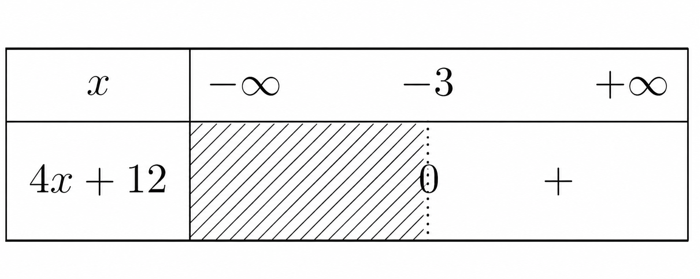
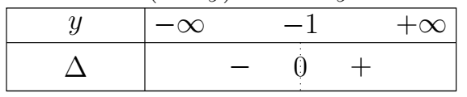
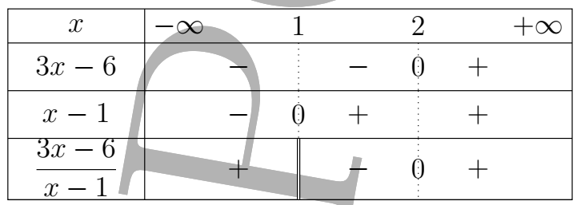

Introduction
Dans de nombreuses situations mathématiques, on cherche à établir une relation entre deux grandeurs : à un nombre, on peut associer son carré ; à une température, une quantité de chaleur ; à un nombre réel, une autre valeur obtenue à partir de celui-ci. Pour décrire précisément ce type de relation, on utilise la notion de fonction.
La notion de fonction permet ainsi d'associer, à chaque élément d'un ensemble de départ, un élément d'un ensemble d'arrivée suivant une règle déterminée. Elle intervient dans de nombreux domaines des mathématiques, notamment dans l'étude des variations, des équations, des suites et des fonctions numériques.
Dans ce chapitre, nous allons d'abord rappeler et approfondir la notion de fonction, puis introduire la notion plus générale d'application. Nous étudierons ensuite la composition de fonctions, qui permet de construire de nouvelles applications à partir d'applications données. Enfin, nous nous intéresserons à l'image directe et à l' image réciproque d'une partie par une application.
L'objectif est de maîtriser le vocabulaire et les propriétés fondamentales des fonctions et des applications afin de pouvoir les utiliser efficacement dans les différents problèmes mathématiques.
I. Notion de fonctions
-
Définitions et exemples
-
Définition
On appelle fonction, toute relation \(f\) entre deux ensembles \(A\) et \(B\) telle que, à tout élément \(x\) de \(A\), on associe au plus un élément \(y\) de \(B\). Cela veut dire : 1 image ou pas d'image uniquement.
Si \(x\) est associé à \(y\) (\(x \in A\) et \(y \in B\)), on note alors :
$ \boxed{f(x) = y} $
- \(y\) est appelé image de \(x\) par la fonction \(f\),
- \(x\) est un antécédent de \(y\) par \(f\).
- \(A\) est l'ensemble de départ de la fonction \(f\) et \(B\) son ensemble d'arrivée.
-
Exemples
diagramme\[ \begin{aligned} f(a) &= 1 \\ f(b) &= 1 \\ f(c) &= 3 \\ f(d) &= 2 \end{aligned} \]\(e\) n'a pas d'image par \(f\).
A tout élément de $A$ on associe au plus un élément de $B$. Donc, la relation $f$ ainsi définie est une fonction .
diagramme\(g\) n'est pas une fonction car on a associé à \(a \in E\), 2 éléments, \(1\) et \(3\) de \(F\).
-
Remarque:
- Si \(B \subset \mathbb{R}\), alors \(f\) est appelée une fonction numérique.
- Si \(A \subset \mathbb{R}\), alors \(f\) est appelée une fonction à variable réelle.
- Si \(A \subset \mathbb{R}\) et \(B \subset \mathbb{R}\), alors \(f\) est appelée une fonction numérique à variable réelle.
-
-
Ensemble de définition
Soit \(f\) une fonction
\( \begin{aligned} f : A &\rightarrow B \\ x &\mapsto y = f(x) \end{aligned} \)
L'ensemble de définition de \(f\), noté \(\mathcal{D}_f\), est l'ensemble des éléments de \(A\) qui ont une image par \(f\) dans \(B\).
Exemple 1
-
Dans le \(1^{\text{er}}\) diagramme, l'ensemble de définition de \(f\) est : \( \boxed{\mathcal{D}_f = \{a\,;\,b\,;\,c\,;\,d\}} \)
-
\( \begin{aligned} f : \mathbb{R} &\rightarrow \mathbb{R} \\ x &\mapsto 2x^3 - 5x + 3 \end{aligned} \)
\(\mathcal{D}_f = \mathbb{R}\) -
\( \begin{aligned} f : \mathbb{R} &\rightarrow \mathbb{R} \\ x &\mapsto \frac{2x+5}{x^2-4} \end{aligned} \)
\(f \text{ existe ssi } x^2-4 \neq 0\)
Posons : \( x^2-4=0 \) \( x=\pm2 \)
\( \mathcal{D}_f =\mathbb{R}\setminus\{-2\,;\,2\} =]-\infty\,;\,-2[ \cup]-2\,;\,2[ \cup]2\,;\,+\infty[ \) -
\( \begin{aligned} f : \mathbb{R} &\rightarrow \mathbb{R} \\ x &\mapsto \sqrt{x-1} \end{aligned} \)
\( f \text{ existe ssi } x-1\geq0 \implies x\geq1 \)
\( \mathcal{D}_f=[1\,;\,+\infty[ \)
-
-
Restriction - prolongement d'une fonction
-
Définition :
Soit \(f\) une fonction définie de \(A\) vers \(B\).
Étant donné que \(D \subset A\), la restriction de \(f\) à \(D\), notée \(f_{|D}\), est la fonction :
\( \begin{aligned} f_{|D} : D &\rightarrow B \\ x &\mapsto y = f(x) \end{aligned} \)
\(f\) est alors appelée le prolongement de \(f_{|D}\) à \(A\).
Exemple 2
Soit $f$ la fonction représentée par le diagramme ci-dessous :
Soit \(E = \{1\,;\,2\,;\,3\,;\,5\,;\,6\}\), il est clair que \(E \subset A\) donc \(g\) est une restriction de \(f\) sur \(E\) ou \(f\) est un prolongement de \(g\) à \(A\).
On donne \(f(x) = |x - 1|\). Écrire \(f\) sans le symbole de la valeur absolue puis donner la restriction de \(f\) sur \(]1\,;\,+\infty[\).
$f(x) = \begin{cases} -x + 1 \text{ si } x < 1 \\[3mm] x - 1 \text{ si } x> 1 \\[3mm] 0 \text{ si } x = 1\\ \end{cases} \implies \boxed{\left. f(x) \right|_{]1 ; +\infty[} = x - 1}$
-
II. Notion d'application
-
Définition et exemples
-
Définition
On appelle application d'un ensemble \(A\) vers un ensemble \(B\), toute relation de \(A\) vers \(B\) telle que à tout élément de \(A\), on associe un et un seul élément de \(B\).
Autrement dit, chaque élément de \(A\) possède une unique image dans \(B\).
-
Exemple
La relation qui à chaque élève de la \(1^{\text{ère}}\) S2 du lycée associe son âge est une application.
En effet, un élève ne peut avoir qu'un seul et unique âge.
On a :
\( \begin{aligned} f(a) &= 1,\\ f(b) &= 1,\\ f(c) &= 2,\\ f(d) &= 3. \end{aligned} \)
Cependant, un élément de \(B\) peut avoir plusieurs antécédents dans \(A\), ou même n'avoir aucun antécédent.
-
Contre-exemple
\(f\) est une application car tout élément de départ est inclus dans son ensemble de définition.
À chaque élément de \(A\) on associe un et un seul élément de \(B\).
\(g\) n'est pas une application car \(3\) n'a pas d'image.
-
Remarque
Toute application est une fonction, mais la réciproque n'est pas toujours vraie.
La restriction d'une fonction à son ensemble de définition est une application.
-
-
Application bijective ou bijection
-
Définition :
Une application définie de \(A\) vers \(B\) est bijective si tout élément de \(B\) admet un et un seul antécédent dans \(A\).
Ainsi, $\forall y\in B,\quad \exists! x\in A\mid f(x)=y.$
C'est-à-dire que pour tout \(y\in B\), l'équation $f(x)=y$
admet une unique solution.
-
Exemple :
Illustration graphique :Chaque élément de \(B\) a un et un seul antécédent par \(f\) dans \(A\).
Donc \(f\) est une application bijective ou une bijection.
\(2\) admet deux antécédents, donc \(g\) n'est pas une application bijective.
\(\gamma\) n'a pas d'antécédent par \(h\).
Donc, \(h\) n'est pas une bijection.
Exercice D'application 2
-
Soit $f$ l'application définie par
\( \begin{array}{rcl} f:[0\,;\,+\infty[ & \longrightarrow & [0\,;\,+\infty[\\ x & \longmapsto & f(x)=x^2 \end{array} \)
$f$ est-elle bijective ?
-
Soit $\ell$ la relation définie par :
$\begin{array}{rcl} \ell:]-\infty\,;\,-2] & \longrightarrow & [-3\,;\,+\infty[\\ x & \longmapsto & \ell(x)=x^2+4x+1 \end{array}$
-
$\ell$ est-elle une application ?
-
Si oui, est-elle bijective ?
-
Correction
-
Soit $y\in[0\,;\,+\infty[$, résolvons l'équation $f(x)=y$.
$f(x)=y \Longrightarrow x^2=y \Longrightarrow x=\sqrt{y}\in[0\,;\,+\infty[\quad \text{ou}\quad x=-\sqrt{y}\notin[0\,;\,+\infty[$
Donc l'équation $f(x)=y$ admet une unique solution $x=\sqrt{y}.$
Par conséquent, $f$ est une bijection.
-
Soit $\ell$ la relation définie par :
$ \begin{array}{rcl} \ell:]-\infty\,;\,-2] & \longrightarrow & [-3\,;\,+\infty[\\ x & \longmapsto & \ell(x)=x^2+4x+1 \end{array}$
-
Soit $x\in]-\infty\,;\,-2]$, il est clair que $x^2+4x+1$ est unique car $ x^2+4x+1=(x+2)^2-3. $
De plus, $ (x+2)^2\geq 0 \Longrightarrow (x+2)^2-3\geq -3. $
Ce qui donne $ \ell(x)\geq -3 \Longrightarrow \ell(x)\in[-3\,;\,+\infty[. $
Par conséquent, $\ell$ est une application.
OU
Soit \(x\in]-\infty\,;\,-2]\), il est clair que \(x^2+4x+1\) est unique.
Vérifions que si \(\ell(x)\geq -3\).
Pour cela, évaluons \(\ell(x)+3\).
$ \begin{aligned} \ell(x)+3 &= x^2+4x+1+3\\ &= x^2+4x+4 \end{aligned} $ $ \ell(x)+3=(x+2)^2\geq 0 $ $ \ell(x)+3\geq 0 \Longrightarrow \ell(x)\geq -3 $Donc,
$ \ell(x)\in[-3\,;\,+\infty[ $Par conséquent, \(\ell\) est une application.
-
Soit \(y\in[-3\,;\,+\infty[\), résolvons \(\ell(x)=y\).
$ \begin{aligned} x^2+4x+1=y &\Longrightarrow x^2+4x+1-y=0\\ &\Delta=16-4(1)(1-y)\\ &\Delta=16-4+4y\\ &\Delta=12+4y \end{aligned} $
$ \text{Posons } \Delta=0 $
$ 12+4y=0 \quad\Longrightarrow\quad y=-3 $

Car $y\in[-3\,;\,+\infty[$
Comme $\Delta>0$, l'équation $\ell(x)=y$ admet 2 solutions.
-
Si $y=3$ alors $\Delta=0$ ;
$ x_0=\dfrac{-4}{2}=-2. $
-
Si $y>-3$
$x_1= \dfrac{-4-\sqrt{12+4y}}{2} = \dfrac{-4-\sqrt{4(3+y)}}{2} = -2-\sqrt{3+y} <-2 $
$ x_2=-2+\sqrt{3+y}>-2 \qquad \text{alors} $
$ x_2\notin]-\infty\,;\,-2]. $
$\boxed{x_1=-2-\sqrt{3+y}\in]-\infty\,;\,-2]}$
- Conclusion
$ \forall y\in]-3\,;\,+\infty[, \quad \text{l'équation }\ell(x)=y \text{ admet une unique solution} $
$ \text{dans }]-\infty\,;\,-2]. $
Donc, $\ell$ est une application bijective.
-
-
-
-
Bijections réciproques :
Définition :
\(f\) étant une bijection d'un ensemble \(A\) dans un ensemble \(B\), on appelle bijection réciproque de \(f\), l'application de \(B\) dans \(A\) notée \(f^{-1}\) qui à tout élément de \(B\) associe son unique antécédent par \(f\) dans \(A\).
L'application réciproque est définie de l'ensemble d'arrivée \(B\) vers l'ensemble de départ \(A\).
Propriété :
Si $f^{-1}$ est l'application de $f$, alors $f$ est aussi l'application réciproque de $f^{-1}$.
Exercice D'application 3
On donne :
$\begin{array}{rcl} f:\mathbb{R}\setminus\{-3\} & \longrightarrow & \mathbb{R}\setminus\{2\}\\ x & \longmapsto & \dfrac{2x+1}{x+3} \end{array}$
Montrer que $f$ est une bijection puis déterminer sa bijection réciproque.
Correction 3
Montrons que $f$ est une bijection puis déterminons sa bijection réciproque.
Soit $y\in\mathbb{R}\setminus\{2\}$, résolvons $f(x)=y$.
$\begin{aligned} f(x)=y &\Longrightarrow \dfrac{2x+1}{x+3}=y\\ &\Longrightarrow 2x+1=yx+3y \\ &\Longrightarrow 2x-xy=3y-1\\ &\Longrightarrow x(2-y)=3y-1\\ &\Longrightarrow x=\frac{3y-1}{2-y} \end{aligned}$
Comme $y\neq2$ donc $x=\dfrac{3y-1}{2-y}$ existe et est unique.
Montrons que $ x\in\mathbb{R}\setminus\{-3\}, $ pour cela on pose
$\begin{aligned} \dfrac{3y-1}{2-y}=-3 &\Longrightarrow 3y-1=-6+3y\\ &\Longrightarrow -1=-6 \\ &\Longrightarrow \text{absurde !!} \end{aligned}$
Par conséquent,$ \dfrac{3y-1}{2-y}\neq-3 $
Ce qui donne l'équation $f(x)=y$ admet une unique solution
$x=\dfrac{3y-1}{2-y}\in\mathbb{R}\setminus\{-3\}.$
D'où $f$ est une bijection et admet donc une bijection réciproque notée :
$\begin{array}{rcl} f^{-1}:\mathbb{R}\setminus\{2\} & \longrightarrow & \mathbb{R}\setminus\{-3\}\\ y & \longmapsto & f^{-1}(y)=\frac{3y-1}{2-y} \end{array}$
Comme la variable est muette, $\boxed{f^{-1}(x)=\frac{3x-1}{2-x}}$
-
-
Application injective ou injection
-
Définition
Une application \(f\) définie de \(A\) vers \(B\) est dite injective (on dit que \(f\) est une injection) si chaque élément de \(B\) est l'image au plus par \(f\) d'un élément de \(A\).
C'est-à-dire que pour tout \(y\in B\), l'équation \(f(x)=y\) admet au plus une solution.
-
Propriété
-
Pour montrer qu'une application $f$ définie de $A$ vers $B$ est injective, il suffit de montrer que pour tout $x\in A$ et $x'\in A$ tel que $ f(x)=f(x'),$ on ait $x=x'.$
-
Pour montrer qu'une application $f$ définie de $A$ vers $B$ n'est pas injective, il suffit de trouver deux éléments $x$ et $x'$ dans $A$ tels que $ x\neq x' \qquad\text{et}\qquad f(x)=f(x').$
Illustration graphique
On constate que chaque élément de \(F\) est l'image au plus d'un élément de \(E\).
Par suite, \(h\) est une injection.
Comme \(f(a)=f(c)=1\), donc \(f\) n'est pas une injection.
Exercice D'application 4
-
Soit
\( \begin{array}{rcl} f:\mathbb{R}\setminus\{-3\} & \longrightarrow & \mathbb{R}\setminus\{2\}\\ x & \longmapsto & \dfrac{2x+1}{x+3} \end{array} \)
Montrer que $f$ est une injection.
-
Soit
\( \begin{array}{rcl} f:\mathbb{R} & \longrightarrow & \mathbb{R}\\ x & \longmapsto & x^2-4x+3 \end{array} \)
$f$ est-elle une injection ?
Correction 4
-
Montrons que $f$ est une injection.
Soit $x\in\mathbb{R}\setminus\{-3\}$ et $x'\in\mathbb{R}\setminus\{-3\}$.
Résolvons $f(x)=f(x')$.
$\begin{aligned} f(x)=f(x') &\Longleftrightarrow \frac{2x+1}{x+3} = \frac{2x'+1}{x'+3}\\ &\Longrightarrow (2x+1)(x'+3) = (2x'+1)(x+3)\\ &\Longrightarrow 2xx'+6x+x'+3 = 2xx'+6x'+x+3\\ &\Longrightarrow 5x'=5x\\ &\Longrightarrow x'=x \end{aligned}$
Par conséquent $f$ est une injection.
-
$f$ est-elle une injection ?
1ère manière
Soit \(y\in\mathbb{R}\).
\( f(x)=y \Longrightarrow x^2-4x+3-y=0 \) \( \Delta=16-4(3-y)=4+4y \)
Les réels supérieurs à $-1$ ont $2$ antécédents par $f$ dans $\mathbb{R}$.
Donc $f$ n'est pas une injection.
Autrement :
\( f(1)=f(3)=0 \qquad\text{et}\qquad 1\neq3 \)
Donc, $f$ n'est pas injective.
On a résolu \( x^2-4x+3=0. \)
Autrement :
\( f(x)=3 \Longrightarrow x=0\quad\text{ou}\quad x=4 \)
Donc, $f$ n'est pas injective.
On a résolu \( x^2-4x+3=3. \)
-
-
-
Application surjective ou surjection
-
Définition
Une application \(f\) définie de \(A\) vers \(B\) est dite surjective (on dit que \(f\) est une surjection) si chaque élément de \(B\) est l'image au moins par \(f\) d'un élément de \(A\).
C'est-à-dire que pour tout \(y\in B\), l'équation \(f(x)=y\) admet au moins une solution.
-
Propriété
Pour montrer que l'application $f$ n'est pas surjective, il suffit de trouver un $y\in B$ qui n'a pas d'antécédent dans $A$.
Chaque élément de $B$ admet au moins un antécédent dans $A$.
Donc $f$ est une surjection
\(7\) n'a pas d'antécédent dans \(D\) par \(g\).
Par conséquent, \(g\) n'est pas une surjection.
Exemple 3
Soit
\( \begin{array}{rcl} f:\mathbb{R} & \longrightarrow & \mathbb{R}\\ x & \longmapsto & x^2+1 \end{array} \)
Les réels négatifs n'ont pas d'antécédent par $f$.
Donc $f$ n'est pas surjective.
-
III. Composées de fonctions
-
Définition
Soient \(E\), \(F\), \(G\) 3 parties non vides de \(\mathbb{R}\), \(f:E\longrightarrow F\) et \(g:F\longrightarrow G\), avec domaine de définition \(D_f\) pour \(f\) et \(D_g\) pour \(g\).
On appelle composée de \(f\) suivie de \(g\), la fonction qui à \(x\) associe \(g(f(x))\), notée \(g\circ f\) (on lit « \(g\) rond \(f\) »).
$ \begin{array}{rcl} g\circ f:E & \longrightarrow & G\\ x & \longmapsto & g\circ f(x)=g(f(x)) \end{array} $
-
Domaine de définition
La composée \(g\circ f(x)\) n'a de sens que si \(x\in D_f\) et \(f(x)\in D_g\). De même que \(f\circ g(x)\) n'a de sens que si \(x\in D_g\) et \(g(x)\in D_f\).
On note :
$ \boxed{ D_{g\circ f}=\{x\in D_f\mid f(x)\in D_g\} } $
De même :
$ \boxed{ D_{f\circ g}=\{x\in D_g\mid g(x)\in D_f\} } $
Exemple 4
On donne
$f(x)=\frac{2x-5}{x-1} \qquad\text{et}\qquad g(x)=\sqrt{x+1}.$
- Déterminer $D_f$, $D_g$, $D_{f\circ g}$, $D_{g\circ f}$.
- Exprimer $g\circ f(x)$.
- Calculer l'image des réels suivants par $f\circ g$ si possible : $0$ et $2$.
-
Déterminons :
$\begin{aligned} *\,D_f &: \quad f\text{ existe si }x-1\neq0\\ &\quad\Longrightarrow x\neq1 \end{aligned}$
$\boxed{D_f=\mathbb{R}\setminus\{1\}}$
$\begin{aligned} *\,D_g &: \quad g\text{ existe si }x+1\geq0\\ &\quad\Longrightarrow x\geq-1 \end{aligned}$
$\boxed{D_g=[-1\,;\,+\infty[}$
$\begin{aligned} D_{f\circ g} &= \{x\in D_g\mid g(x)\in D_f\}\\ &= \{x\in[-1\,;\,+\infty[ \mid \sqrt{x+1}\in\mathbb{R}\setminus\{1\}\}\\ &= \{x\geq -1\mid \sqrt{x+1}\neq1\}\\ &= \{x\geq -1\mid x\neq0\} \end{aligned}$
$\boxed{ D_{f\circ g} = [-1\,;\,0[\cup]0\,;\,+\infty[ }$
$*D_{g\circ f}$ :
$\begin{aligned} D_{g\circ f} &= \{x\in\mathbb{R}\setminus\{1\}\mid f(x)\in[-1\,;\,+\infty[\}\\ &= \left\{x\neq1\mid \frac{2x-5}{x-1}\geq-1\right\} \end{aligned}$
Or
$ \begin{aligned} \dfrac{2x-5}{x-1}\geq-1 &\Longrightarrow \dfrac{2x-5}{x-1}+1\geq0\\ &\Longrightarrow \dfrac{3x-6}{x-1}\geq0 \end{aligned}$
Posons $3x-6=0\Longrightarrow x=2$ et $x\neq1$.

Ce qui donne $x\in]-\infty\,;\,1[\cup[2\,;\,+\infty[$
$D_{g\circ f}=\{x\neq1\text{ et }x\in]-\infty\,;\,1[\cup[2\,;\,+\infty[\}$
$\boxed{ D_{g\circ f} = ]-\infty\,;\,1[\cup[2\,;\,+\infty[ }$
-
Exprimons $g\circ f(x)$ :
$\begin{aligned} g\circ f(x) &=g(f(x))\\ &=\sqrt{f(x)+1}\\ &=\sqrt{\frac{2x-5}{x-1}+1}\\ &=\sqrt{\frac{2x-5+x-1}{x-1}}\\ &=\sqrt{\frac{3x-6}{x-1}} \end{aligned}$
$\boxed{ g\circ f(x)=\sqrt{\frac{3x-6}{x-1}} }$
-
Calculons l'image de $0$ et $2$
$0\notin D_{f\circ g}$ donc, l'image par $f\circ g$ de $0$ n'existe pas.
$2\in D_{f\circ g}$ et $ f\circ g(2)=f(g(2)) $
$\begin{aligned} g(2)&=\sqrt{3} \Longrightarrow f\circ g(2)=\frac{2\sqrt{3}-5}{\sqrt{3}-1}\\ f\circ g(2) &=\frac{(2\sqrt{3}-5)(\sqrt{3}+1)} {3-1} \end{aligned}$
$\boxed{ f\circ g(2)=\frac{1-3\sqrt{3}}{2} }$
IV. Image directe - Image réciproque par une application
-
Image directe
-
Définition :
Soit $f$ une fonction définie de $E\longrightarrow F$, d'ensemble de définition $D_f$ et $A$ une partie de $E$.
On appelle \textcolor{darkred}{\textbf{image directe}} (image de $A$ par $f$) notée $f(A)$, l'ensemble des images par $f$ de tous les éléments de $D_f \cap A$.
$\boxed{ f(A)=\{y\in F\mid \exists x\in A\mid y=f(x)\} }$
$\Longrightarrow f(A)=\{f(x)\mid x\in A\}$
-
Exemple :
Soit
$\begin{array}{rcl} f:\mathbb{R} & \longrightarrow & \mathbb{R}\\ x & \longmapsto & \dfrac{1}{x+1} \end{array}$
Trouver les images par $f$ de chacun des deux intervalles de $\mathbb{R}$ suivants :
$A=]-1\,;\,4] \qquad;\qquad B=[-5\,;\,3].$
$f$ existe ssi $x\neq -1$, $\quad D_f=\mathbb{R}\setminus\{-1\}$
$\ast \forall x\in A,\quad x\in D_f,\quad \text{calculons } f(A).$
$\begin{aligned} \begin{aligned} x\in A &\Longrightarrow -1 < x \leq4\\ &\Longrightarrow 0 < x+1 \leq5\\ &\Longrightarrow \dfrac{1}{5}\leq\frac{1}{x+1}\\ &\Longrightarrow \dfrac{1}{5}\leq f(x) \end{aligned} \end{aligned}$$\boxed{ f(A)=\left[\dfrac{1}{5}\,;\,+\infty\right[ }$
$\ast \forall x\in B\cap D_f \Longrightarrow x\in[-5\,;\,-1[\cup]-1\,;\,3]$
$\begin{aligned} x\in[-5\,;\,-1[ &\quad\text{ou}\quad x\in]-1\,;\,3]\\ -5\leq x < -1 &\quad\text{ou}\quad -1 < x \leq3\\ -4\leq x+1 < 0 &\quad\text{ou}\quad 0 < x+1 \leq4\\ -\dfrac{1}{4}\geq\dfrac{1}{x+1} &\quad\text{ou}\quad \frac{1}{4}\leq\dfrac{1}{x+1}\\ f(x)\leq-\dfrac{1}{4} &\quad\text{ou}\quad f(x)\geq\dfrac{1}{4} \end{aligned}$
$\boxed{ f(B)= \left]-\infty\,;\,-\frac{1}{4}\right] \cup \left[\frac{1}{4}\,;\,+\infty\right[ }$
-
-
Image réciproque
-
Définition :
Soit \(f\) une fonction définie de \(E\) vers \(F\), d'ensemble de définition \(D_f\) et \(B\) une partie de \(F\).
On appelle image réciproque de \(B\) par \(f\), notée \(f^{-1}(B)\), l'ensemble des antécédents par \(f\) de tous les éléments de \(B\).
-
Remarque : Comment trouver l'image réciproque ?
Pour trouver l'image réciproque d'un intervalle $B$ dans $\mathbb{R}$ par une fonction $f$ d'ensemble de définition $D_f$, on résout par des systèmes d'inconnues suivants :
- Si \(B=[a\,;\,b]\), alors on résout : $ \begin{cases} x\in D_f\\[3mm] a\leq f(x)\leq b \end{cases} $
-
Si \(B=]a\,;\,b[\), alors on résout : $ \begin{cases} x\in D_f\\[3mm] a < f(x) < b \end{cases} $
-
Si \( B=[a\,;\,b[ \), alors on résout : $ \begin{cases} x\in D_f\\[3mm] a\leq f(x) < b \end{cases} $
-
Si \(B=]-\infty\,;\,b]\), alors on résout : $ \begin{cases} x\in D_f\\[3mm] f(x)\leq b \end{cases} $
-
Si \(B=[a\,;\,+\infty[\), alors on résout : $ \begin{cases} x\in D_f\\[3mm] f(x)\geq a \end{cases} $
-
Si \(B=\{b\}\), alors on résout : $ \begin{cases} x\in D_f\\[3mm] f(x)=b \end{cases} $
Exemple 5
soit
$\begin{array}{rcl} f:\mathbb{R} & \longrightarrow & \mathbb{R}\\ x & \longmapsto & 2x-1 \end{array} \qquad;\qquad \begin{array}{rcl} g:\mathbb{R} & \longrightarrow & \mathbb{R}\\ x & \longmapsto & x^2-x-2 \end{array}$
-